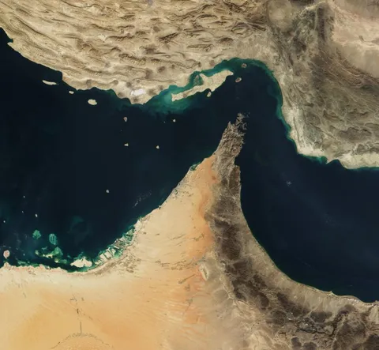

OKpolítico
OKpolíticoDos petroleros sufren explosiones tras chocar con minas en el estrecho de Ormuz

Dos petroleros que transitaban por el estrecho de Ormuz explotaron tras chocar con minas navales, provocando el hundimiento de uno de ellos y generando una nueva escalada entre Irán y Estados Unidos.
Compartir por WhatsAppActualización 08:42 h
El 15 de noviembre, la Guardia Revolucionaria iraní informó que dos petroleros que navegaban por la ruta meridional no autorizada del estrecho de Ormuz sufrieron fuertes explosiones tras chocar contra minas navales. Uno de los buques, un superpetrolero que transportaba más de dos millones de barriles de crudo, se hundió en aguas del golfo Pérsico.
Según el comunicado de la Armada de la Guardia Revolucionaria, los buques habían apagado sus sistemas de identificación y posicionamiento para atravesar el estrecho con el apoyo de fuerzas estadounidenses, lo que los colocó en una ruta considerada ilegal por Teherán. El hundimiento dejó a la Guardia Revolucionaria alerta sobre la presencia de restos que podrían poner en riesgo a pescadores locales.
✉️ Recibe lo importante del día en tu correo. Suscríbete gratis →El incidente se produce en medio de una intensificación de ataques en la zona desde mediados de septiembre, cuando Irán ha aumentado la presencia de minas y otras amenazas marítimas en respuesta al cerco naval impuesto por Washington. Desde el inicio de la guerra en febrero, el estrecho de Ormuz ha sido un punto crítico de tensión entre ambos países.
La Guardia Revolucionaria no identificó la bandera de los petroleros ni informó sobre víctimas, pero advirtió que los buques que utilicen rutas no autorizadas enfrentarán consecuencias similares. La Marina británica y las autoridades marítimas indias también han reportado ataques a petroleros en la zona, lo que sugiere una escalada de hostilidades marítimas.
El próximo paso será la respuesta de las autoridades estadounidenses y de la comunidad internacional ante el aumento de incidentes en el estrecho, mientras que Irán continúa con su política de restringir el tránsito y amenazar a los buques que elijan rutas alternativas.
Actualización 06:43 h
El 14 de noviembre de 2026, la Armada iraní informó que tres petroleros que navegaban por rutas no autorizadas en el estrecho de Ormuz chocaron contra minas marinas y se incendiaron. Los buques, de origen desconocido, estaban operando con los sistemas de seguimiento y de identificación apagados y sin cumplir las advertencias previas de la zona prohibida.
El incidente se produjo en un contexto de intensificación de los ataques contra la navegación comercial en Oriente Medio, tras la declaración del subsecretario general de la ONU para Oriente Medio, Mohamed Khaled Khiari, sobre el aumento de incidentes en la región. Desde el inicio del conflicto en febrero, la ONU y la Organización Marítima Internacional han registrado más de 130 incidentes en el estrecho de Ormuz.
El estrecho de Ormuz es una vía marítima estratégica que transporta más del 20 % del petróleo mundial. Los actores principales son las Fuerzas Armadas de Irán, que mantienen minas en la zona, y la comunidad internacional, que busca garantizar la seguridad del tráfico marítimo. El conflicto se ha intensificado por la presencia de fuerzas extranjeras y la disputa sobre la soberanía del estrecho.
La respuesta oficial de Irán fue un comunicado de la Armada que advirtió que cualquier buque que infrinja las normas y navegue por la zona prohibida será golpeado por minas y se incendiará. La ONU, por su parte, pidió al Consejo de Seguridad que garantice el paso seguro de los buques y que se tomen medidas para evitar futuros incidentes. El próximo paso será la evaluación de las medidas de seguridad marítima y la posible intervención diplomática para reducir la tensión en la zona.
El incidente refuerza la percepción de que la región sigue siendo un punto crítico para la seguridad energética mundial y subraya la necesidad de un marco internacional más sólido para proteger el tráfico marítimo en el estrecho de Ormuz.
Actualización 20:34 h
El 14 de noviembre de 2026, las Fuerzas Armadas de Irán informó que tres petroleros se incendiaron tras chocar contra minas marinas en el estrecho de Ormuz, una zona estratégica para el tráfico de hidrocarburos. Los buques, que navegaban por rutas no autorizadas y con sus sistemas de seguimiento apagados, fueron afectados por las minas desplegadas por el Estado iraní.
El incidente sigue a un aumento de la tensión en la región, tras la declaración del subsecretario general de la ONU para Oriente Medio, Mohamed Khaled Khiari, sobre el repunte de ataques contra la navegación comercial. La ONU había advertido al Consejo de Seguridad sobre la escalada de incidentes, mientras que el Reino Unido y la Organización Marítima Internacional reportaron más de 130 incidentes desde el inicio del conflicto en febrero de 2024.
Los actores principales son las Fuerzas Armadas de Irán, que gestionan la zona de Ormuz, y la comunidad internacional, que vigila la seguridad marítima. El estrecho es una ruta crítica para el comercio mundial de petróleo, por lo que cualquier alteración en su seguridad tiene repercusiones globales.
La respuesta oficial de Irán fue una advertencia de que cualquier buque que infrinja las normas y navegue por la zona prohibida será atacado por minas. La ONU solicitó garantías de paso seguro y la comunidad internacional continúa monitoreando la situación. No se han reportado víctimas ni daños a la tripulación, pero el incidente refuerza la percepción de riesgo en la zona.
La situación permanece volátil; las autoridades internacionales siguen evaluando las medidas de seguridad y las posibles negociaciones para evitar futuros incidentes en Ormuz.
Impacto en el comercio mundial y la energía
El estrecho de Ormuz representa un punto estratégico fundamental para el tráfico comercial mundial de energía, ya que por esta vía marítima transitaba aproximadamente el 25 por 100 del comercio mundial de petróleo por vía marítima y el 20 por 100 del gas natural licuado mundial antes de que iniciara el bloqueo de la ruta por parte de Irán. La interrupción del tráfico de buques tanque y el cierre del estrecho han provocado que los precios del petróleo aumentaran con rapidez, superando el Brent los 100 dólares por barril y alcanzando un pico de 126 dólares por barril.
Para los consumidores y la economía en general, el encarecimiento de los energéticos a nivel global se traduce en presiones inflacionarias que impactan directamente el costo de los combustibles, la generación de energía y el transporte de mercancías. La Organización Marítima Internacional documentó que miles de marineros y barcos se han visto varados en la región, mientras que la Organización de las Naciones Unidas contabilizó 134 incidentes marítimos en el estrecho de Ormuz y aguas cercanas entre el inicio de la guerra y el 11 de noviembre de 2026.
Detalles de los incendios y postura de Teherán
De acuerdo con la Armada iraní y los Guardianes de la Revolución, los tres petroleros se incendiaron durante la madrugada tras navegar por rutas consideradas no autorizadas y prohibidas por Teherán, . Hasta el momento, las autoridades iraníes no han revelado los nombres, las banderas ni los países de origen de los buques afectados, ni han informado sobre personas fallecidas o heridas, aunque uno de los barcos fue descrito como un superpetrolero.
Las fuerzas iraníes renovaron sus advertencias a las embarcaciones que intenten transitar por corredores marítimos restringidos, mientras que Estados Unidos mantiene un bloqueo a los puertos iraníes y . Los reportes sobre los impactos contra minas y las circunstancias de los incendios corresponden a la versión difundida por las autoridades de Irán y no han sido verificados de manera independiente.
Sigue viendo
- 📺 Detienen a Lili Campos: el esquema de 62 mdp en lavado fantasma
- 📺 La matanza de Aguas Blancas: el expediente de 1995
- 📺 DEA acusa nexos políticos-cárteles: ¿cooperación o injerencia?
- 📰 Muere Peter Hernandez, padre de Bruno Mars, a los 74 años
- 📰 Morena definirá el miércoles estrategia para renovar presidencia del INE ante falta de acuerdos
- 📰 Petro advierte sobre golpe de Estado en Colombia tras denuncias de senadores de oposición
Con información de
laverdad.com.mx · milenio.com · Libertad Oaxaca · LatinUS · La Verdad de Tamaulipas · Yahoo Finanzas · DW.com · Cadena 3 Argentina · ContraRéplica · VLN Radio · Diario Versión Final · DW · RTVE.es · France 24 · EFE